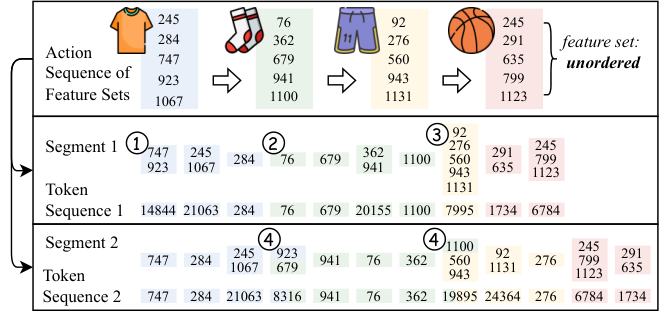
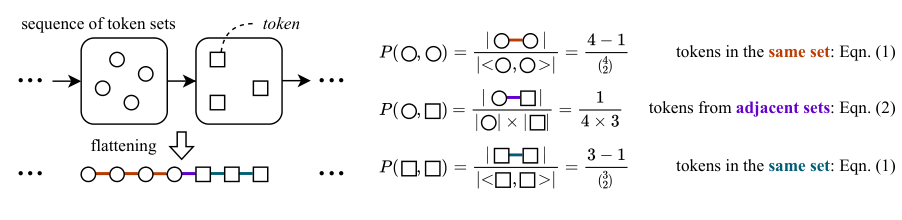

ActionPiece: Contextually Tokenizing Action Sequences for Generative Recommendation
Подробное саммари статьи:
Авторы: Yupeng Hou, Jianmo Ni, Zhankui He, Noveen Sachdeva, Wang-Cheng Kang, Ed H. Chi, Julian McAuley, Derek Zhiyuan Cheng.
Аффилиации: University of California San Diego; Google DeepMind.
1. Коротко: о чем статья
ActionPiece переносит идею subword tokenization из NLP в generative recommendation, но применяет ее не к item IDs, а к action sequences. Главная претензия к существующим GR tokenizer'ам: они токенизируют один и тот же action одинаково во всех контекстах. В рекомендациях это плохо, потому что один товар или действие может иметь разный смысл в разных user sequences.
ActionPiece делает context-aware tokenization: action представляется как set item features, а vocabulary строится через merge feature patterns по co-occurrence внутри action set и между соседними action sets.
2. Пример токенизации

В отличие от fixed SID подходов, ActionPiece может создать токены, которые покрывают не только части одного item, но и устойчивые паттерны между соседними действиями. Поэтому одинаковый action может получить разное разбиение в зависимости от surrounding context.
3. Как строится vocabulary
Каждый action начинается как unordered set item features. Затем алгоритм считает co-occurrence token pairs:
- внутри одного feature set;
- между соседними action sets;
- с весами, которые учитывают близость и структуру последовательности.

Наиболее частые и полезные pairs сливаются в новые tokens, как в BPE/SentencePiece, но с учетом структуры recommendation sequence.
4. Set permutation regularization
Поскольку item features внутри action не упорядочены, один и тот же action set можно сегментировать несколькими способами без изменения semantics. ActionPiece использует set permutation regularization: модель видит несколько tokenization variants для той же последовательности. Это работает как data augmentation и снижает зависимость от произвольного порядка features.
5. Эксперименты
Авторы сравнивают ActionPiece с sequential recommendation и generative recommendation baselines на Amazon Reviews datasets. ActionPiece стабильно обгоняет baseline'ы и улучшает NDCG@10 на 6.00%-12.82% относительно лучшего baseline. Отдельный вывод: feature-based methods обычно лучше item ID-only, а generative models с sub-item semantics лучше используют item features.
В абляциях авторы показывают, что выигрыш не объясняется только большим vocabulary size. Контекстные merges и set permutation regularization вносят отдельный вклад.
6. Что важно
- ActionPiece сдвигает фокус с item tokenization на action-sequence tokenization.
- Метод учитывает контекст до обучения generative recommender, уже на уровне tokenizer.
- Vocabulary строится data-driven, но не игнорирует unordered nature feature sets.
- Это хорошая альтернатива fixed semantic ID, когда user behavior sequence несет больше смысла, чем isolated item.
7. Ограничения
- Алгоритм vocabulary construction сложнее обычного RQ-VAE tokenizer.
- Нужно иметь качественные item features; raw item IDs сами по себе не раскрывают потенциал метода.
- Context-aware tokens могут быть менее стабильными при сильном изменении behavior distribution.
- Production decoding и item grounding требуют аккуратной реализации, потому что output tokens больше не соответствуют одному item напрямую.
8. Связь с Semantic ID работами
TIGER/CoST/LETTER обычно спрашивают: как токенизировать item? ActionPiece спрашивает: как токенизировать действие внутри последовательности? Это делает работу особенно полезной для sequential recommendation, где intent зависит от соседних действий.
9. Вывод
ActionPiece - сильная идея для generative sequential recommendation: токенизировать не item изолированно, а action в контексте. Если semantic IDs дают компактный язык объектов, ActionPiece строит язык поведенческих паттернов. Это особенно важно для длинных историй, где один и тот же item может означать разные intents.